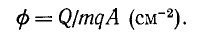
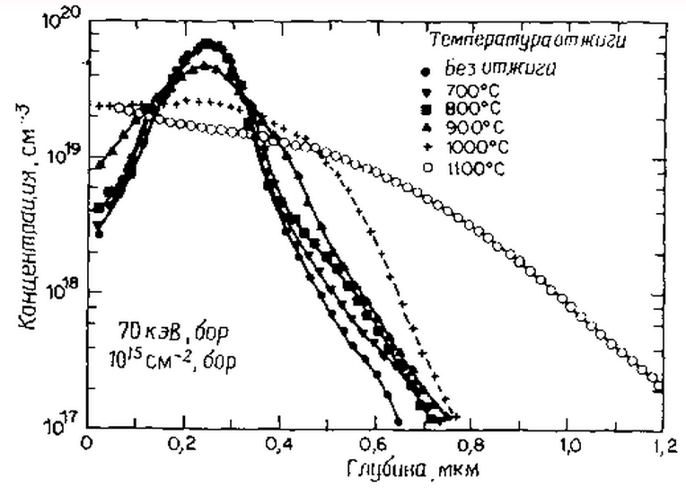

электронный
ресурс по учебной дисциплине 1-58 01 01 - "ИНЖЕНЕРНО-ПСИХОЛОГИЧЕСКОЕ ОБЕСПЕЧЕНИЕ ИНФОРМАЦИОННЫХ ТЕХНОЛОГИЙ"
|
||
| Оглавление | Программа | Теория | Практика | Контроль знаний | Об авторах | ||
|
Практика
ЛАБОРАТОРНАЯ РАБОТА №8 Исследование процессов ионной имплантации Цель работы: Изучить основные характеристики процесса ионной имплантации. Написать программу и построить зависимости выходных параметров от входных. Теоретические сведения Ионной имплантацией называют процесс внедрения в мишень ионизированных атомов с энергией, достаточной для проникновения в ее приповерхностные области. Наиболее общим применением ионной имплантации является процесс ионного легирования кремния при изготовлении приборов. Энергия легирующих ионов бора, фосфора или мышьяка в диапазоне 3—500 кэВ достаточна для их имплантации в приповерхностную область кремниевой подложки на глубину 10—1000 нм. На этой глубине атомы расположены под любыми поверхностными слоями естественного окисла толщиной до 3 нм, и, следовательно, при внедрении примеси отсутствуют всякие барьерные эффекты, связанные с наличием поверхностных окислов. Глубина залегания имплантированной примеси, которая пропорциональна энергии ионов, может быть выбрана исходя из требований конкретного применения имплантированной структуры. Основными преимуществами технологии ионной имплантации возможность легировать любой материал; возможность вводить примесь в любой концентрации независимо от ее растворимости в материале подложки; возможность вводить примесь при любой температуре подложки, от гелиевых температур до температуры плавления включительно; возможность работать с легирующими веществами технической чистоты и даже с их химическими соединениями (тоже любой чистоты); изотопная чистота легирующего ионного пучка (т.е. возможность легировать не только исключительно данным элементом, но и исключительно данным изотопом этого элемента); легкость локального легирования (с помощью хотя бы элементарного механического маскирования); малая толщина легированного слоя (менее микрона); большие градиенты концентрации примеси по глубине слоя, недостижимые при традиционных методах с неизбежным диффузионным размыванием границы; легкость контроля и полной автоматизации технологического процесса. С точки зрения управления концентрацией легирующей примеси в диапазоне 1014—1018 см-3 ионная имплантация имеет явное преимущество над методами химического осаждения. Маски для ионной имплантации могут быть изготовлены из любых материалов, используемых в производстве СБИС, таких, как фоторезист, окислы, нитриды, поликристаллический кремний и т.д. Процесс ионной имплантации, проводимый в вакууме, относится к категории «чистых и сухих процессов». При высокой дозе имплантируемых ионов (например, аргона) могут зарождаться специфические виды дефектов. Последующий отжиг имплантированных структур приводит к образованию мелкозернистых поликристаллических слоев, а также областей с высокой плотностью дислокаций, к которым диффундируют нежелательные примеси. Кроме того, введенные ионной имплантацией дефекты могут захватывать нежелательные примеси, такие, как медь, из областей р—n-перехода. Такой процесс получил название генерирования. Введем понятие дозы. Для этого рассмотрим ионный пучок, имеющий массу М, заряд mq (m — кратность ионизации атома; q — заряд электрона) и энергию Е во время его движения через вакуумное дрейфовое пространство по направлению к мишени. Сканирование ионного пучка производится схемой отклонения заряженных частиц для получения однородного распределения имплантируемых атомов по площади мишени. Сканирование пучка ограничено площадью апертурной диафрагмы А. За ней в пределах площади, которая спроецирована на металлический держатель мишени, помещают пластину кремния. Подложка имеет хороший электрический контакт с держателем мишени, который в свою очередь присоединен к интегратору заряда. Электроны проходят через интегратор заряда и нейтрализуют имплантированные ионы, когда те тормозятся в кремнии. Интегрированный заряд Q (кулон) определяет дозу имплантируемых ионов:  Интегрированный заряд определяется как Диффузия имплантированных примесей. Диффузия имплантированных примесей в кремнии является сложным процессом даже при отсутствии радиационных дефектов. Важную роль при этом играют термические вакансии кремния (их ассоциированные заряженные состояния) и межузельные атомы кремния, поскольку они действуют в качестве стоков примесных частиц. При исследовании диффузии имплантированных примесей необходимо принимать во внимание образование на дефектах вакансий, межузельных атомов, комплесов вакансия — примесь и линейных дефектов. Рассмотрим структуру, полученную ионной имплантацией бора с дозой 1015 см-2 при комнатной температуре без образования аморфного слоя. На рис. 1 показано, что профиль имплантационного распределения расширяется в области «хвоста» (отжиг в температурном диапазоне 700—800 °С в течение 35 мин), тогда как концентрационный пик остается резким. Этот диффузионный «хвост» в профиле распределения аномально велик по сравнению с расчетным, полученным на основании опубликованных значений коэффициента диффузии бора в кремнии. Коэффициент диффузии бора может быть повышен за счет уничтожения кремниевых вакансий и межузельных кластеров, при этом вакансии могут увеличить коэффициент диффузии по узлам кристаллической решетки, а межузельные атомы кремния могут вытеснять атомы бора из узлов кристаллической решетки, что приведет к быстрой диффузии комплексов межузельный атом кремния — атом бора. Неразмытому пику концентрации в профиле распределения соответствует область с неупорядоченной структурой, которая не устраняется при отжиге в температурном интервале 700—800 °С.  Рисунок 1 – Зависимость концентрации атома бора от температуры отжига; время отжига 35 минут Во время отжига при температуре 900°С происходит размытие концентрационного пика, тогда как атомы бора, соответствующие ниспадающим участкам профиля распределения, занимают достаточно устойчивые положения. Это явление можно объяснить тем, что дислокации, располагающиеся в области пиковой концентрации примеси в профиле распределения, начинают отжигаться с образованием кремниевых вакансий и межузельных атомов, которые могут ускорять диффузию атомов бора. Профиль распределения имплантированного бора после отжига структуры при температуре 900°С в течение 35 мин может быть описан с помощью эффективного коэффициента диффузии, который в ~3 раза превышает нормальную величину коэффициента диффузии бора в кремнии при температуре- 900 °С (3*10-14 см2/с и соответственно 1*10—14 см2/с). Во время отжига при температуре 1000 °С происходит дополнительное термическое размытие профиля распределения легирующей примеси, однако это размытие может быть объяснено обычной теорией диффузии. Коэффициент диффузии примеси не зависит от концентрации имплантированных атомов. Термические вакансии и межузельные атомы во время диффузионного перемещения могут образовывать преципитаты. Задание для выполнения лабораторной работы Ионный пучок с величиной тока X мкА имеет полуугловое расхождение С° после прохождения квадратной апертурой диафрагмы (8x8 см), расположенной на расстоянии Y см от мишени. Используя измеритель тока, определите время процесса, необходимое для ионной имплантации с дозой Z см-2 для однократно ионизированных моноатомных частиц. Варианты заданий:,
Порядок выполнения работы 1. Напишите программу, обеспечивающую решение задачи. 2. Постройте зависимости выходных параметров от входных. 3. Оформите отчет и защитите лабораторную работу. Содержание отчета 1. Цель работы. 2. Краткие теоретические сведения. 3. Решение задачи. 4. Код программы и скриншоты рабочих окон. 5. Зависимости выходных параметров от выходных. 6. Выводы по работе. Контрольные вопросы 1. Что такое ионная имплантация? 2. Перечислите основные преимущества технологии ионной имплантации. 3. Что такое генерирование? 4. Какие параметры влияют на процесс ионной имплантации? 5. Какие условия необходимо соблюдать для проведения процесса диффузии имплантированных примесей в кремний? Практика
|
| (С) БГУИР |